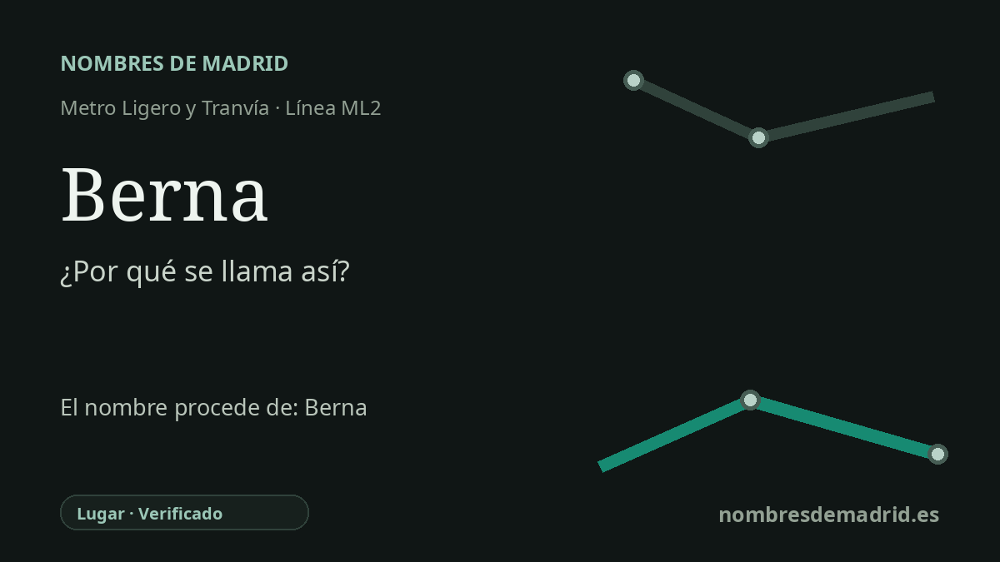

Publicado el · Investigación de Nombres de Madrid · Cómo verificamos cada origen · 6 fuentes consultadas
Respuesta rápida
La estación Berna debe su nombre a la calle Berna de Pozuelo de Alarcón. La vía forma parte del conjunto de nombres europeos de la zona de la Avenida de Europa y remite en último término a Berna, ciudad federal y capital de facto de Suiza.
La historia del nombre
La estación Berna toma su nombre público de la calle Berna, una vía cercana de Pozuelo de Alarcón. La página municipal de transportes enumera Berna como la duodécima parada de la ML2 y describe la línea como un recorrido que llega a Aravaca después de atravesar la vía de las Dos Castillas y la calle Berna. Es decir, el nombre de la estación es ante todo local y funcional: identifica la parada por el entorno viario que encuentra el viajero al salir a la superficie.
El nombre anterior que hay detrás de la calle es Berna, la ciudad suiza. En la nomenclatura viaria española aparece con su forma castellana habitual, Berna. La referencia es geográfica, no biográfica: no homenajea a una persona apellidada o llamada Berna, sino que encaja en una temática de capitales y países europeos de esta zona de Pozuelo.
Esa temática se ve con claridad en planos municipales y de transporte del área de la Avenida de Europa. La calle Berna aparece junto a la calle Suiza y cerca de vías llamadas Alemania, Berlín, Inglaterra, Londres, Austria, Hungría, Polonia e Irlanda. El patrón no queda documentado como un programa municipal formal, pero la evidencia cartográfica muestra con fuerza un conjunto deliberado de topónimos europeos en torno a la Avenida de Europa.
La capa de transporte llegó después. La información corporativa de Metro Ligero Oeste da el 27 de julio de 2007 como fecha de inauguración del sistema, y el Ayuntamiento de Pozuelo presenta la ML2 como la línea que va de Colonia Jardín hacia la Estación de Aravaca con 13 paradas en este corredor municipal. Berna, por tanto, no era un antiguo nombre ferroviario: entró en el uso del transporte público con el metro ligero, ligado a un entorno urbano que ya tenía ese nombre.
Conviene matizar la forma de hablar de la ciudad suiza. Berna suele presentarse como la capital de Suiza, y la propia ciudad utiliza ese lenguaje en materiales públicos, pero la información federal suiza explica que el país no tiene una capital oficial de iure en sentido técnico estricto; Berna es la ciudad federal y capital de facto, sede del gobierno, el parlamento y buena parte de la administración federal. La etimología de la estación está verificada en el nivel calle-ciudad, aunque quedan por confirmar en archivo la fecha exacta de denominación de la calle y el acuerdo municipal que fijó el conjunto de nombres europeos.